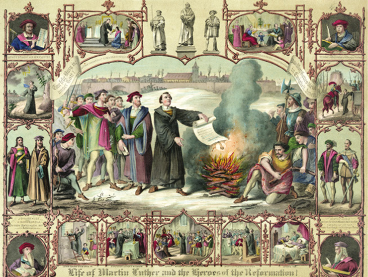
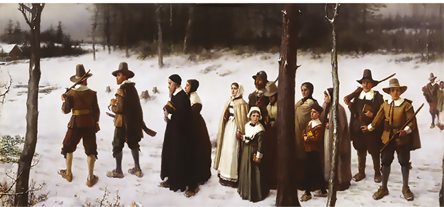

Abaixo, você lerá um trecho de uma matéria da BBC, de julho de 2019. Em seguida, responda às perguntas propostas, que tratarão de um dos temas que abordaremos neste capítulo.
“Qual é seu maior defeito?” Essa é uma pergunta que muitos temem escutar durante uma entrevista de emprego. [...] Lee Biggins, fundador e diretor da plataforma de busca de empregos CV-Library, considera que não há nada pior que clichês como “sou perfeccionista”, “sempre tenho que ser pontual”, “me importo demais com o que faço” ou coisas similares. “Simplesmente não parece genuíno e acaba soando como todos os demais. Em vez de fazer isso, tente ser honesto nas respostas. Se você tem dificuldade numa área concreta do seu trabalho, admita e acrescente o que está tentando fazer para melhorar”, aconselha. [...]
Qual é a melhor forma de dizer quais são seus pontos fracos na entrevista de emprego. BBC, 18 jun. 2019. Disponível em: <https://www.bbc.com/portuguese/geral-48676504>. Acesso em: 20 ago. 2021.
Nos casos de entrevista de emprego, nota-se que, de acordo com a matéria, por vezes os candidatos não se mostram autênticos em suas respostas, ao menos quando se trata de falar de seus defeitos.
- Essas ações se baseiam em uma decisão racional, em uma emoção ou em algum valor cultural relacionado ao mercado de trabalho?
- Se estivessem em outro contexto, será que as respostas seriam as mesmas? Justifique sua resposta.
- Podemos perceber significados e intenções em todas as nossas ações no dia a dia? Por quê?
Neste capítulo, serão abordadas as habilidades EM13CHS101 e EM13CHS102.
Cientificidade
Max Weber: um dos pensadores clássicos da Sociologia.
akg-images/Álbum/Fotoarena
Max Weber (1864-1920), alemão, é um dos importantes pensadores atuantes na passagem do século XIX para o XX. Seu pensamento também foi responsável pela consolidação da Sociologia como ciência. Weber tem uma importante contribuição na área da metodologia das ciências, sobretudo nas sociais. Para ele, as diversas áreas do saber têm o caráter de cientificidade na medida em que conseguem produzir diversas explicações causais relativas aos conteúdos da realidade. Em outras palavras, tanto as Ciências naturais quanto as Ciências histórico-sociais fazem a indagação: “O que causa isso?”. No entanto, Weber chama a atenção para o seguinte: a realidade é tão complexa que apresenta muitas cadeias de eventos e inúmeros aspectos, de maneira que uma explicação causal é apenas um fragmento de uma realidade estudada. Por exemplo, podemos considerar as causas religiosas da Reforma protestante (século XVI), mas também suas causas políticas, econômicas, sociais e culturais e a influência de outros fatores.
Gravura de 1874 que, ao centro, apresenta Lutero queimando a bula papal de excomunhão (expulsão do catolicismo). As imagens laterais trazem cenas da vida do reformador e ex-monge católico. Para Weber, há várias causas para um fenômeno social.
Alex:D/Wikimedia Commons
Em outras palavras, um estudo pode ser conduzido com base em diferentes aspectos da mesma realidade. Considerando isso, cabe ao estudioso fazer seleções, escolhendo quais aspectos e argumentos utilizará e quais fenômenos levará em conta em sua investigação. E como são feitos esses recortes ou seleções? Weber explica que isso se dá a partir de valores. Essa referência, no entanto, não diz respeito a juízos de valor nem a uma categoria de valores tidos como absolutos. Os valores são princípios de escolha, que servem para estabelecer os aspectos e os problemas a serem enfrentados em uma pesquisa objetiva.
Juízo de valor é um enunciado que expressa avaliação ou apreciação de algum aspecto da realidade, sem compromisso com o ideal de neutralidade científica. Exemplos: “O número de desempregados no país é lastimável”; “Os dados revelados pela pesquisa são fantásticos”.
Ciência e valores: duas vocações
Ainda em relação aos valores, Weber entende que não é papel das pessoas das ciências, enquanto cientistas, emitir juízos de valor. O meio científico não tem lugar para louvores ou julgamentos. O cientista busca causas, tece explicações, não sendo sua função avaliar. Assim, o teórico alemão estabelece a necessidade de separação entre juízos de fato e juízos de valor, entre o “ser” e o “dever ser”.
Juízo de fato é um enunciado que expressa o que as coisas são, como são ou por que são, procurando manter a neutralidade científica. Exemplos: “O desemprego atinge cerca de 13 milhões de pessoas”; “Os dados da pesquisa apresentam taxa de 95% de confiabilidade”.
Nesse contexto, Weber propõe o princípio de neutralidade axiológica ou de valores. Essa neutralidade não significa inexistência de valores nos processos científicos, e sim indica a necessidade de os cientistas se isentarem de incluir avaliações subjetivas em suas pesquisas, uma vez que isso, como consequência, as contaminaria, podendo comprometer os resultados. Porém, os valores fazem parte dos fenômenos da vida e da sociedade. O que fazer, então, com eles? Segundo Weber, os valores devem ser considerados como dados, e a Sociologia deve analisar o sentido que eles possam ter para o desenvolvimento de fenômenos sociais.
Axiológico: relativo à Axiologia, estudo de questões relativas a valores, estes no sentido de traços culturais, morais, ideológicos, institucionais, entre outros. O elemento de composição axio- vem do grego áksios, “aquilo que é ponderável, que apresenta valor”.
Weber sabe que, em relação à perspectiva de neutralidade axiológica, é possível considerar que os próprios recortes feitos para estudar um fenômeno indicam que não ocorre, nesses contextos, objetividade absoluta. Valores, visões, cultura etc. não são plenamente isolados dos que se propõem a realizar algum estudo. Ainda assim, considera que faz parte do dever do cientista procurar a neutralidade própria de sua vocação. Essa reflexão sobre ciência e valores faz com que Weber distinga dois tipos de vocações: para ciência e para a política. A vocação para a ciência exigiria sacrifício das próprias opiniões e, em certa medida, dos valores pessoais, para que os frutos dos estudos sejam mais próximos possível da realidade. Por outro lado, Weber também descreve que há uma vocação para a política, que, ao contrário da vocação científica, assume os valores e os usa como norte para a atuação em sociedade. No caso da vocação política, o que se exige é que tal ação seja temperada pela prudência: nem sempre é possível agir no campo político conforme exatamente as próprias convicções. É o que faz Weber diferenciar a ética da convicção e a ética da responsabilidade. A primeira refere-se ao conjunto de valores do político. A segunda é a situação real em que o político vive, quando é necessário, por vezes, abdicar de certas convicções para realizar acordos, compromissos e concessões.
Ação social como objeto
Diferentemente de Durkheim, Weber entende como principal preocupação da Sociologia a compreensão do indivíduo e de suas ações. A sociedade não seria uma realidade externa aos indivíduos, e sim o conjunto das ações dos indivíduos, que se inter-relacionam. Assim, Weber estabelece o que deve ser o objeto da Sociologia: as ações sociais. Estas partem dos indivíduos e de suas motivações e são orientadas ao outro. Em outras palavras, elas são comportamentos em que o agente atribui à sua conduta um significado, o qual é voltado para a ação do outro.
Uma ação social, como comunicar-se em um chat ou fazer uma pesquisa para um debate entre colegas, sempre considera o outro.
ferlistockphoto/iStockphoto.com
Note que falamos em motivações. E por quê? Justamente porque, de acordo com o pensamento weberiano, cabe perguntar: por que esta ou aquela pessoa tomou determinada decisão? Quais as motivações de seus atos? As respostas nos ajudam a compreender a sociedade. Os comportamentos têm uma razão de ser, têm um significado, como acabamos de dizer. Também falamos que se trata de atos orientados ao outro. Ou seja, toda ação social considera o outro, com quem se tem ou se pode vir a ter uma relação social. Weber distingue quatro tipos de motivação para as ações sociais, que você pode ver na tabela a seguir.
| Ações sociais | ||
|---|---|---|
| Tipo | Definição | Exemplo |
| Ação racional vinculada a finalidades | Ato praticado com o propósito de alcançar determinado fim. | Um aluno que se dedica aos estudos visando à aprovação em um vestibular. |
| Ação racional vinculada a valores | Ato que se orienta não por uma finalidade, mas por um valor que tenha em vista a fidelidade a uma convicção ou a um valor, seja moral, ético, religioso, político ou outro. | Uma pessoa que se insere em uma missão de assistência religiosa em razão de um valor de sua crença. |
| Ação afetiva | Ato motivado por algum sentimento (ciúme, paixão, medo, esperança, inveja, orgulho, vingança etc.). | Um indivíduo que decide não admitir um erro que cometeu, por medo de ser repreendido e de passar a ser malvisto. |
| Ação tradicional | Ato motivado por alguma tradição, costume ou hábito enraizado em sua vida. | Uma pessoa que usa trajes brancos ou de outra cor específica e simbólica no Réveillon por força de tradição em sua cultura. |
Weber distingue quatro tipos básicos de ações sociais.
A consciência e a motivação das ações das pessoas formam uma dimensão subjetiva das relações sociais. A busca por compreender as motivações das ações dos indivíduos é também conhecida, na sociologia weberiana, como teoria da compreensão ou sociologia compreensiva.
Tipos ideais
A fim de conferir maior rigor aos estudos sociológicos, Max Weber formula a teoria do tipo ideal (ou tipo puro). Trata-se de uma versão simplificada e generalizada de um elemento da realidade, uma noção abstrata, que serve de parâmetro para estudos e análises de fenômenos. Por exemplo, quando falamos em “políticos” de modo geral, estamos recorrendo a um tipo ideal: pessoa que se ocupa de assuntos públicos, eleito por voto popular e agente de várias relações públicas (bem ou malconduzidas), comícios, audiências públicas etc. Quando mencionamos democracia, via de regra, pensamos em Estado de direito, divisão de poderes, instituições, agentes políticos, participação da sociedade etc. Ao falarmos em professores, imaginamos aulas, espaço escolar, aplicação de avaliações, entre outros aspectos. Esses e outros exemplos são construções mentais, que não correspondem exatamente à realidade, mas apenas a uma ideia aproximada. Afinal, cada político, cada democracia, cada professor são únicos. Então, ao estabelecermos tipos ideais, realçamos características em comum ou mais frequentes.
Na Sociologia de Weber, não confunda ideal com idealizado (de qualidades que tendem à perfeição) nem com aquilo que é objeto de uma alta aspiração. Os tipos construídos não são projeções do que gostaríamos de ver na realidade, pelo contrário, eles são generalizações assentadas na vida real. O adjetivo ideal, nesse caso, significa “relativo à ideia, à abstração mental”.
Todavia, é preciso deixar claro que o tipo ideal é resultado das investigações sociológicas, baseado, portanto, em dados e estatísticas reais. Por mais que sejam detalhadas tais pesquisas, ainda assim, o tipo ideal não será um reflexo perfeito da realidade estudada. É dever do cientista sempre levar tal característica em consideração, aprimorando constantemente suas pesquisas.
Plenário do Senado em Brasília (DF). “Políticos brasileiros” é um exemplo de tipo ideal.
diegograndi/iStockphoto.com
Em resumo, pelo que vimos, podemos elencar os seguintes métodos sociológicos principais de Weber:
- construção do tipo ideal;
- estabelecimento das relações causais;
- seleção ou recorte para a análise do fenômeno;
- investigação do sentido e da motivação da ação (teoria da compreensão);
- objetividade do conhecimento e da análise.
Relações sociais
Outro conceito importante do weberianismo é o de relação social. Em sua obra, Conceitos básicos de Sociologia (1922), Weber procurou deixar uma série de definições ancoradas em suas pesquisas, explicando, assim, que uma relação social é uma rede de ações sociais, que se orientam umas pelas outras e cuja manutenção se dá por meio da expectativa de cada envolvido quanto à probabilidade de que os outros participantes vão se portar da maneira esperada. Para Weber, esse jogo de expectativas é a força que mantém as relações na sociedade e os grupos humanos.
Tomemos um exemplo. Uma pessoa passa a perceber interesse romântico por alguém de seu convívio. Ambos passam a interagir mais e a sair, e uma delas já nota que alimenta a expectativa de iniciar um relacionamento amoroso. Após mais algum tempo, havendo correspondência de sentimentos, acabam assumindo uma relação. Qual será a duração? É possível saber? Na visão de Max Weber, a resposta é pelo tempo em que durar a crença na probabilidade de que a outra parte permanecerá satisfazendo determinadas expectativas criadas. Se, em algum momento, uma das partes se desiludir com a outra (ou as duas ao mesmo tempo), possivelmente ocorrerá rompimento.
Diante desse quadro, o sociólogo alemão classifica as relações sociais da seguinte maneira. •
- Relações comunitárias – Dão-se quando os participantes se alicerçam em um sentimento de pertencimento ao grupo; ou seja, há uma base de ações afetivas ou tradicionais. •
- Relações associativas – Dão-se quando os participantes se ancoram em alguma união de interesses manifestados em ações de cunho racional, sejam elas vinculadas a finalidades ou a valores.
Poder e dominação
No mundo das relações sociais, também se encontram aquelas marcadas por formas de poder. De acordo com a visão weberiana, o poder é a relação social em que alguém tem de imprimir a própria vontade, mesmo contra a resistência da outra pessoa e independentemente da base na qual essa ação se sustenta.
É importante notar que as palavras dominação, dominado e dominador, no contexto de análise social weberiana, não carregam sentido negativo intrínseco. Elas se referem a uma questão de poder. Naturalmente, uma avaliação crítica, acerca de casos analisados, pode levar a um juízo negativo. Os três vocábulos aqui comentados têm como étimo o latim dominus, que significa “senhor, mandatário, aquele que exerce senhorio”.
Em outras palavras, de acordo com esse conceito, não há preocupação em definir quais os recursos empregados pelo detentor do poder nem o tipo específico de relação estabelecida. Mas, além do poder não consentido, há nesse âmbito outra relação: a dominação. Nesse caso, um indivíduo dominador ou indivíduos dominadores têm sobre o outro, ou outros, um poder assentado na probabilidade de que haverá obediência. E isso em virtude de alguma legitimidade atribuída ou reconhecida pelos dominados.
Desse modo, a dominação, uma vez que é o poder consentido, faz com que essa relação seja legítima e tende a levar a uma estabilidade na relação social. Assim, podemos nos perguntar: quais são as bases dessa legitimação? Weber dirá que há três tipos de motivações para as pessoas aceitarem a dominação.
Na realidade, uma mesma figura social de poder pode ser identificada com mais de um tipo de dominação. O ex-presidente brasileiro Getúlio Vargas (1882-1954), por exemplo, foi um líder caracterizado como populista (baseado na conquista do apoio das massas populares e de outros grupos sociais) e, com isso, poderia ser associado à dominação carismática (por seu carisma com o povo), e não apenas à dominação legal como chefe de Estado. A propósito, de maneira geral, é frequente que o carisma seja um fator determinante para alguém chegar ao poder político – como dito, isso é frequente (por exemplo, nos casos de eleições diretas), mas não regra geral.
- Dominação carismática – É a que tem fundamento na obediência a uma liderança em razão do que as pessoas veem como qualidades excepcionais do líder. Exemplo: Antônio Conselheiro (1830-1897), que liderou, social e religiosamente, a comunidade de Canudos, no sertão baiano, em um modelo rural autossustentável que, no final do século XIX, atraiu agricultores pobres, escravizados recém-libertados e indígenas.
- Dominação tradicional – Aquela em que a obediência se dá como consequência de tradições arraigadas. Exemplo: o poder dos senhores feudais, aceito por estar enraizado nos costumes nesse tipo de sociedade. •
- Dominação legal – Aquela que se fundamenta em uma ordem legal, oficialmente estabelecida em normas ou contratos. Exemplos: patrões e gestores em empresas e chefes de Estado no poder público.
Dominação legal e burocracia
A forte presença da burocracia na sociedade moderna é outro tema tratado por Weber. Relacionada ao poder e à autoridade legal, ela pode ser definida como um aparato administrativo e técnico, conduzido por normas e formado por profissionais especializados, selecionados por critérios técnicos e sujeitos a uma hierarquia.
O termo burocracia só seria cunhado por volta de 1750, por um economista francês, Vincent de Gournay (1712-1759). O vocábulo bureaucratie se compõe, na língua francesa, de bureau, “mesa de escritório” e, por metonímia, “escritório, gabinete”, e -cratie (“-cracia”), elemento originado do grego krátos, “força, autoridade, governo”.
Mesmo existindo, ainda que em níveis diferentes, em sociedades do passado, como no Império romano, processos de burocratização passaram a ser parte indissociável das sociedades, sobretudo, no contexto da modernidade. A divisão de atribuições, a seleção de funcionários, as normas e a disciplina na hierarquia seriam fatores a contribuir para a eficiência na administração burocrática. Esse sistema, visto como um reflexo da nova realidade moderna da sociedade, iria se fazer presente tanto no setor público quanto no privado (capitalist, sendo visto como essencial ao funcionamento do Estado e de diferentes cenários de administração.
Estado moderno e sua legitimação
Falamos em burocracia e Estado no contexto da modernidade. Mas como Max Weber concebe esse último? Escreve ele:
... há diversas críticas à burocracia, à sua lentidão, a ineficiências em muitos casos e a empecilhos representados por ela. Algumas das críticas contundentes estão registradas em obras literárias de Franz Kafka (1883-1924). Em narrativas como A metamorfose, O processo e O Castelo, o escritor tcheco, de diferentes formas, satiriza sistemas burocráticos, que subjugariam a vida humana. Em O Castelo, por exemplo, um jovem se vê impedido de acessar um espaço identificado como “o Castelo”, onde assumiria o trabalho de agrimensor, em razão de barreiras burocráticas.
[...] O Estado moderno possui as seguintes características, primeiramente formais: uma autoridade administrativa e judicial sujeita à mudança de estatutos, e à qual a atividade do quadro administrativo, também sujeito à mudança de estatutos, se orienta. Este sistema de autoridade reivindica validade não apenas para membros da associação, a maioria dos quais a ela pertencem por nascimento, mas também, numa grande extensão, para toda conduta que ocorre dentro da área de sua jurisdição; é, portanto, uma associação compulsória com uma base territorial. Além disso, considera-se o uso da força hoje como legítimo, apenas na medida em que é permitido pelo Estado ou prescrito por ele. [...] Esta reivindicação do Estado moderno de monopolizar o uso da força é uma marca distintiva tão essencial a ele com o seu aspecto de jurisdição compulsória e de organização contínua. [...]
WEBER, Max. Conceitos básicos de Sociologia. Rubens Eduardo Ferreira Frias e Gerard Georges Delaunay (Trad.). São Paulo: Centauro, 2002. p. 102.
Nessa definição, podemos destacar a legitimidade estatal – bastante assentada na dominação legal, condição de manutenção do poder – e o monopólio do uso da força física, sob condições estabelecidas (no caso, em leis). Essa forma de Estado, vale também notar, resulta do desenvolvimento da sociedade capitalista, que demanda uma administração de caráter racional.
Brexit: uma análise de caso sob a perspectiva de Weber
A saída do Reino Unido da União Europeia, que ficou conhecida como Brexit, suscitou uma série de questões a respeito das motivações que culminaram na separação. O início do litígio ocorreu em 2016 quando houve a realização de um referendo no qual a população decidiu pela saída imediata do bloco. O fato é que, apesar de ter saído, há diversos pontos que precisam ser resolvidos, mas que foram adiados por conta da pandemia.
Manifestação pela saída do Reino Unido da União Europeia, o Brexit.
philip openshaw/Shutterstock.com
O Brexit suscitou debates importantes e questões relevantes, mas, afinal, como analisar a questão de maneira a evitar uma excessiva simplificação? Uma resposta científica/sociológica para essa pergunta poderia levar em consideração os conceitos de tipos ideais de Weber, já que são aproximações da realidade, obtidos por meio da reunião de fatos concretos. Cabe lembrar que, por mais que essa reunião de fatos seja a mais aproximada possível, ela ainda será apenas uma aproximação da realidade. Assim, temos de ter a consciência de que é muito difícil compreender de forma plena as motivações tanto dos defensores da saída do Reino Unido da União Europeia quanto dos da permanência. Essa explicação será sempre aproximada. Levando isso em consideração, poderíamos dizer que, idealmente (no sentido de tipo ideal), os que defendiam a saída possuíam os seguintes argumentos:
- A questão da soberania, uma vez que tanto os acordos econômicos como alguns políticos precisam ter aval da União Europeia, órgão cuja burocracia dificultaria a participação popular direta. •
- A questão da livre circulação no chamado espaço europeu, que poderia colocar em xeque as fronteiras nacionais.
- Já os que eram a favor da permanência argumentavam que: • os defensores do Brexit estavam sendo xenofóbicos, pois a tese de instabilidade econômica não se sustentava; •
- a livre circulação pelo espaço europeu trouxe mão de obra qualificada para setores importantes da economia; •
- o Brexit traria problemas para os estrangeiros que já viviam no país, que seriam obrigados a entrar com o pedido de cidadania por meio de um longo e burocrático processo e que eventualmente poderiam até abandonar o país e retornar para suas terras de origem.
Essas são respostas de tipos ideais, ou seja, pode haver mais motivações tanto de um lado quanto de outro, as quais novos estudos poderiam revelar. Tal situação nos ensina que a pesquisa sociológica deve sempre ter em mente as limitações de suas ferramentas conceituais e a necessidade constante de atualização de suas pesquisas. Poderíamos utilizar também os conceitos de ação racional de finalidade, de valores, de emoções e de tradições para investigar as motivações. A crítica à xenofobia feita pelos que eram contra o Brexit pode ser categorizada como uma ação racional de valores (nesse caso, os valores dos direitos humanos). Por outro lado, a soberania nacional, defendida pelos que eram a favor do Brexit, também poderia ser avaliada sob a perspectiva da ação racional de valor (nesse caso, o valor da liberdad. Ainda poderíamos compreender o fenômeno do Brexit sob os conceitos de dominação de Weber. É necessário ressaltar que o processo de saída do Reino Unido obedeceu a todo o rito legal, que foi fiscalizado de perto pelas autoridades competentes e acompanhado pela população. Tal rito só é possível porque a questão da cidadania está fundamentada na chamada dominação legal, ou seja, o funcionamento do país obedece a uma ordem legal que o fundamenta e lhe confere legitimidade.
Capitalismo e protestantismo
Um dos trabalhos consagrados de Max Weber é sua análise de relações entre protestantismo e capitalismo, sobretudo na obra A ética protestante e o espírito do capitalismo, cujos textos foram lançados entre 1904 e 1905. O sociólogo parte do fenômeno do protestantismo correlacionado ao desenvolvimento do modo de produção capitalista, com ênfase na Europa ocidental e nos Estados Unidos.
Inicialmente, Weber mostra que, analisando estatísticas de qualquer país com religiosidade composta de diferentes confissões, observa-se que, no ramo empresarial, a maioria dos proprietários e dos profissionais mais qualificados e mais bem-sucedidos era protestante.
Ele nota que, nas instituições de ensino, era inferior o percentual de católicos em cursos voltados para indústria e comércio, se comparado com o número de protestantes. Assim, o número de católicos com qualificação para o empresariado era menor. Eles privilegiavam, em geral, formações humanísticas. Enquanto isso, em regiões em que eram minoria, os protestantes tinham dificuldade de se inserir em postos de trabalho no funcionalismo público, o que os levava a tender para outras atividades econômicas.
Weber menciona um provérbio de seu tempo: “Coma bem ou durma bem”. Quanto a isso, a constatação é de que os adeptos do catolicismo eram mais inclinados à segunda opção, em busca de um estilo de vida mais seguro, enquanto os membros de instituições protestantes visavam mais à primeira opção, o que significava se arriscar mais e ser mais empreendedor.
O contador e sua esposa (1539), do pintor holandês Marinus van Reymerswaele (1490-1546). No passado, era censurada a atividade de emprestar dinheiro a juros.
Alonso de Mendoza/Wikimedia Commons
Espírito capitalista
Ao procurar explicar o espírito do capitalismo, Weber apresenta algumas ideias, como as atribuídas a Benjamin Franklin (1706-1790), filósofo político, diplomata e cientista estadunidense. Uma delas é que “tempo é dinheiro”. Sob essa ótica, considerando um exemplo com a nossa moeda, se uma pessoa, em sua atividade de trabalho, ganha R$ 50,00 por dia e reserva para si um dia de folga, no qual consome R$ 20, seria possível concluir que o dinheiro realmente gasto, levando em conta o tempo não produtivo, foi de R$ 70. Ou seja, soma-se, aos gastos propriamente ditos, o tempo em que se deixou de produzir e lucrar. Também à ação de fazer empréstimos se aplica a lógica que equipara tempo a dinheiro. O tempo que um valor fica nas mãos de outro rende juros, uma vez que o credor deixou de empregá-lo e gerar lucros com ele. A Igreja Católica, no passado, condenava essa prática, chamada de usura: ela não via no dinheiro um bem produtivo, gerador de valor, mas apenas um instrumento de troca. Assim, considerava um pecado (um afastamento de Deus) ganhar renda sem ter trabalhado diretamente para isso. Essa mentalidade começou a mudar com o advento do protestantismo.
Éthos protestante
A perspectiva de gerar lucros nos negócios, não se limitando a ganhar apenas para a sobrevivência, está associada à própria identidade das populações protestantes, dirá Weber. Ela corresponde, então, a um éthos. Essa racionalização da produção de valor também é estimulada, de certa maneira, pelo conceito luterano de vocação cristã. Opondo-se ao ideal de vida monástica, o primeiro líder da Reforma protestante, Lutero, preconiza que as pessoas recebem “chamados” de Deus para se realizar como cristãs na vida civil de trabalho e na família. Ele próprio, ex-clérigo católico, iria se casar com uma ex-monja, com quem teve seis filhos, o que constituiria, por séculos, um modelo de família patriarcal protestante.
Éthos: termo grego que indica um conjunto de costumes, comportamentos, valores e hábitos, que se vinculam à identidade de determinada cultura e coletividade. Vocação: disposição interior que orienta uma pessoa no sentido de uma atividade, profissão, papel etc.; em contexto religioso, é identificada como “chamado divino” (em latim, vocatio é “ação de chamar”). Monástico: referente a monges ou monjas, religiosos católicos que vivem comunitariamente em um mosteiro, casa religiosa em que alternam, em seu dia a dia, orações, estudos e trabalhos, em um estilo de vida marcado por valores como austeridade, pobreza e celibato.
Contudo, a ideia de vocação em Lutero estava mais ligada à visão religiosa. De outras correntes protestantes emergentes, sobressai-se a calvinista nas contribuições ao espírito do capitalismo. O francês João Calvino (1509-1564) foi outro grande expoente da Reforma protestante. Formando-se inicialmente na Suíça, essa corrente, depois, iria se disseminar por outros países, como Escócia e França. O calvinismo considera a doutrina da predestinação: os seres humanos já estariam predestinados a serem condenados ou salvos em uma vida eterna após a morte. Os calvinistas se recusavam a adotar qualquer ritual, de modo que não houvesse impressão de que seria possível alterar o que já estava preestabelecido recorrendo à intercessão divina. Diversão, luxo e desperdício também eram rejeitados. Restava, então, dedicar-se extremamente ao trabalho. Uma vida próspera e bem-sucedida seria uma forma de louvar a Deus. O estilo de vida laborioso e a recusa de realizar consumos ostentatórios e supérfluos conduziram a um grande acúmulo de riquezas, que geravam mais riquezas.
Peregrinos indo à igreja (1867), tela de George Boughton (1833-1905), mostra puritanos (uma derivação do calvinismo), na América do Norte, enfrentando inverno rigoroso para se reunir. O protestantismo é associado por Weber ao desenvolvimento do capitalismo. P. S. Burton/Wikimedia Commons
Weber constata que os países mais ricos do mundo em seu tempo, ou seja, no início do século XX, eram de população predominantemente protestante. Ele concluirá que o protestante, mesmo não tendo instaurado sozinho o capitalismo, contribuiu, e muito, para moldá-lo e disseminá-lo.
Racionalização e desencantamento do mundo
Ao olhar, sobretudo para a sociedade pós-industrial, a sociologia weberiana entende que o mundo ocidental foi sendo reduzido à racionalização. Assim, aspectos da vida social baseados em tradições e em crenças religiosas entraram em declínio. Esse processo denominamos desencantamento do mundo.
Sacramentos: ritos sagrados que, para a fé cristã, comunicam ao ser humano especiais graças e bênçãos divinas. Na Igreja Católica e na Ortodoxa, são sete (batismo, eucaristia, crisma, confissão, unção dos enfermos, ordem e matrimônio). Igrejas protestantes não os aceitam ou os aceitam parcialmente.
O sentido de desencantamento, aqui, não é de desilusão, desapontamento, mas de "desmagificação", isto é, de quebra do encanto, declínio da magia, do transcendental, do “sentido a mais” dado pela religião. Weber explica que esse fenômeno, verificado, aliás, no interior da própria religião, teria tido sua primeira manifestação entre os profetas do Antigo Testamento bíblico, os profetas do judaísmo, que pregavam contra práticas de magia e de adivinhações entre povos de culturas com as quais tiveram contato.
ViktorCap/iStockphoto.com
FatCamera/iStockphoto.com
O abandono, total ou parcial, dos ritos sacramentais por parte das correntes protestantes é visto por Weber como indício de desencantamento. Na primeira foto, um sacerdote católico consagra pão e vinho, que, para a fé católica, tornam-se corpo e sangue de Cristo. Na segunda, um ministro protestante faz uma pregação bíblica.
O ápice do desencantamento teria se dado com o protestantismo, que, em diversas correntes, deixou de lado os sacramentos católicos, ou a maioria deles. Desconsiderava-se, em muitos casos, a necessidade de rituais, símbolos e outros elementos para ter contato com o sagrado, havendo maior ênfase na interpretação das escrituras, isto é, da Bíblia. O sociólogo alemão ainda aponta que a ampla racionalização no Ocidente tem lugar, especialmente a partir do século XVI, não só em razão da Reforma, mas também por causa do advento da ciência moderna. Verifica-se, pouco a pouco, uma revolução de mentalidade, que vai além do interior da religião: muitos passam a considerar tão somente conteúdos racionais e materiais e a criticar tanto a religião quanto a filosofia mais metafísica.
1
Leia a matéria a seguir, da Agência Brasil, publicação de dezembro de 2018.
Se você tem a sensação de que, ao transitar pelas ruas e academias, avista, cada vez mais, um número maior de pessoas praticando corrida, saiba que sua percepção tem fundamento. Segundo a Pesquisa de Vigilância de Fatores de Risco e Proteção para Doenças crônicas por Inquérito Telefônico (Vigitel) 2017, elaborada pelo Ministério da Saúde, a quantidade de atletas corredores aumentou 194% no país, entre os anos de 2006 e 2017. [...] De acordo com a pasta, a caminhada é o exercício físico mais comum, sendo praticado por 33,6% da população. Na sequência, aparecem a musculação (17,7%), o futebol (11,7%) e as lutas e artes marciais (2,3%). [...]
BOND, Letycia. Parcela de brasileiros que praticam exercícios físicos aumenta 24%. Agência Brasil, 25 dez. 2018. Disponível em: <http://agenciabrasil.ebc.com.br/saude/noticia/2018-12/parcela-de-brasileiros-que-praticam-exercicios-fisicos-aumenta-24>. Acesso em: 14 jul. 2019.
O Brasil tem visto aumentar o número de pessoas que praticam exercícios físicos.
kali9/iStockphoto.com
- Podemos afirmar que práticas de exercícios físicos e esportes, em geral, figuram como ações sociais. Por quê? É comum que essas práticas sejam caracterizadas como ações racionais vinculadas a fins. Qual o motivo dessa categorização?
- É comum que essas práticas sejam caracterizadas como ações racionais vinculadas a fins. Qual o motivo dessa categorização?
2
[...] Ainda que esta terra é só o vestíbulo do céu, devemos, sem nenhuma dúvida, fazer uso de suas bênçãos, de maneira que em lugar de demorarmos durante esta viagem, nos encontremos auxiliados por ela a alcançarmos nossa meta. [...]
CALVINO, João. A verdadeira vida cristã. Daniel Costa (Trad.). São Paulo: Novo Século, 2000. p. 69.
Vestíbulo: pátio externo, de acesso à entrada principal de uma edificação.
O texto lido faz parte dos ensinamentos religiosos do reformador João Calvino.
- No fragmento, Calvino fala dos bens terrenos. Explique como ele compreendia a riqueza, do ponto de vista religios
- Poucas páginas após esse ensinamento, encontramos o título “Vivamos com moderação”. O que ele significa, no éthos do calvinismo? Qual será a consequência prática desse aspecto da fé calvinista, segundo Weber?
- O que justifica o título A ética protestante e o espírito do capitalismo, na concepção de Weber? Como o pensamento de Calvino pode ser associado ao ideário capitalista?
3
O texto a seguir, de dezembro de 2014, é parte de uma reportagem da BBC que indaga se as religiões poderão desaparecer no futuro.
[...] Acadêmicos ainda estão tentando destrinchar os fatores complexos que levam um indivíduo ou uma nação ao ateísmo, mas existem alguns pontos em comum. Parte do apelo das religiões está na segurança que ela oferece em um mundo de incertezas. Por isso, não por acaso, nações que registram maiores taxas de ateísmo tendem a ser aquelas que oferecem a seus cidadãos uma estabilidade econômica, política e existencial relativamente alta. Para [o sociólogo e professor Phil] Zuckerman, o capitalismo e o acesso à tecnologia e à educação também parecem ter relação com o declínio da religiosidade em algumas populações. [...]
NUWER, Rachel. As religiões vão desaparecer no futuro? BBC, 31 dez. 2014. Disponível em: <https://www.bbc.com/portuguese/noticias /2014/12/141230_vert_fut_religiao_futuro_ml> Acesso em: 10 jul. 2019.
Assim como a livraria Polare Maastricht, outros estabelecimentos comerciais e de entretenimento se instalaram em antigos templos na Holanda, país cuja população se declara, em sua maioria, não religiosa.
Wut_Moppie/Shutterstock.com
O declínio da religião se verifica em vários países do mundo. No caso holandês, trazido à tona na foto e em sua legenda, 51% da população se declarava não religiosa em 2017, de acordo com o Instituto Central de Estatística do país. No mesmo ano, os holandeses ocupavam a décima posição no ranking dos melhores Índices de Desenvolvimento Humano (IDHs) do mundo.
- De acordo com o argumento levantado pela reportagem como possibilidade, de que forma esses dados da Holanda poderiam ser relacionados?
- A que argumento de Weber podemos associar a hipótese apontada pelo sociólogo Phil Zuckerman na matéria? Explique esse conteúdo na teoria weberiana.
1
UFU-MG 2017 Para Fernando José Martins, no “fenômeno contemporâneo das ocupações das escolas: os estudantes de São Paulo lutaram para que sua escola não feche, ou por melhores condições nas escolas do Rio de Janeiro, ou contra a gestão privada das escolas em Goiás, o passe livre e aumento da merenda no Ceará, ou, no caso paranaense, sobre a reforma do Ensino Médio, que subtrai a obrigatoriedade de elementos curriculares fundamentais”.
MARTINS, Fernando José. O caráter pedagógico da ocupação das escolas. Gazeta do Povo, 14 out. 2016. Disponível em: <http://www.gazetadopovo.com.br/opiniao/artigos/o-carater-pedagogico-da-ocupacao-das-escolas-4qd45ib0p7hy6mli685kqzsxg>. Acesso em: 22 abr. 2017.
Avaliando o movimento das ocupações a partir do conceito de ação social em Weber, pode-se afirmar que o tipo de ação social prevalecente é:
- Ação afetiva
- Ação racional em relação a fins
- Ação tradicional
- Ação altruísta em relação a valores
2
UFU-MG 2016 Observe a charge e a ação do capitão e do marinheiro de não abandonarem o navio em caso de naufrágio. A referida ação pode ser analisada utilizando a tipologia das ações sociais de Weber. Com base nas informações, faça o que se pede.
Disponível em: <http://www.clubedoarrais.com/o-capitao-deve- ser-o-ultimo-a-abandonar-o-navio-em-caso-de-naufragio/>.
- Indique e descreva as características da ação social à qual se refere a ação acima.
- Justifique sua escolha dessa ação social, explicando-a por meio da Teoria Compreensiva de Weber.
3
UEM-PR 2018 Dentre os conceitos sociológicos construídos por Max Weber para compreender a vida social, figura o de tipo ideal. Sobre o conceito de tipo ideal em Max Weber, é correto afirmar que
- 01. representa uma construção metodológica, portanto é um modelo sobre o qual se constrói a análise sociológica.
- 02. inexiste na realidade empírica tal qual como é retratado no modelo.
- 04. é um recurso de análise que permite conceituar fenômenos e formações sociais e localizar suas manifestações na realidade observada.
- 08. é uma ferramenta de busca de leis sociais.
- 16. é denominado “ideal” por representar um objetivo que deve ser buscado pelas sociedades estudadas.
- Soma:
4
UEM-PR 2017 Max Weber é um dos autores centrais para a constituição da Sociologia. Um de seus principais temas de investigação foi o da dominação. Para ele, os sistemas de dominação se vinculariam a processos de legitimação. No intuito de compreender tal situação, o autor desenvolveu um modelo de análise com base naquilo que denominou de três tipos ideais de dominação: o racional, o tradicional e o carismático. Assinale o que for correto a respeito desses três tipos weberianos de dominação.
- 01. Os tipos de dominação propostos por Max Weber não são encontrados de forma pura na realidade.
- 02. Para que exista dominação, é necessário que os dominados obedeçam à autoridade dos que detêm o poder.
- 04. Para Max Weber, a dominação carismática é baseada na veneração do poder heroico, na santidade e no caráter exemplar de uma pessoa.
- 08. A dominação tradicional, segundo Max Weber, consiste no desenvolvimento do aparato burocrático.
- 16. Max Weber define a dominação racional como aquela que não necessita dos aparatos legislativo e burocrático.
- Soma:
5
Unioeste 2016 Max Weber (1864-1920) afirma que “devemos conceber o Estado contemporâneo como uma comunidade humana que, dentro dos limites de determinado território […], reivindica o monopólio do uso legítimo da violência física” (Weber, Ciência e Política: duas vocações. São Paulo: Cultrix, 2006, p. 56). Assinale a alternativa CORRETA, a respeito do significado da afirmação de Weber.
- Para Weber, no caso do Estado contemporâneo, apenas seus agentes podem utilizar a violência de modo legítimo dentro dos limites do seu território.
- O Estado foi sempre o único agente que pode utilizar legalmente a violência com o consentimento dos cidadãos – a violência dos pais contra os filhos, por exemplo, sempre foi ilegal.
- Atualmente, o Estado é o único agente que utiliza a violência (ameaças, armas de fogo, coação físic como meio de atingir seus fins – assim a segurança de todos os cidadãos está garantida.
- Outros grupos também podem utilizar a violência como recurso – por exemplo, as empresas privadas de vigilância – independente da autorização legal do Estado.
- Todos os cidadãos reconhecem como legítima qualquer violência praticada pelos agentes do Estado contemporâneo – por exemplo, quando a polícia usa balas de borracha contra grevistas.
6
UFU 2016 Para Weber, “A dominação, ou seja, a probabilidade de encontrar obediência a um determinado mandato, pode fundar-se em diversos motivos de submissão.” (COHN, 1991. p. 128). Nesse sentido, as ações de Mahatma Gandhi, líder no movimento de independência da Índia, representam qual tipo de dominação na análise weberiana?
- Dominação Legal
- Dominação Anômica
- Dominação Carismática
- Dominação Altruísta
7
Unisc 2016 Leia atentamente o texto e responda à questão assinalando uma das alternativas a seguir.
“Max Weber frequentemente utilizou a imagem da máquina na análise da natureza da organização burocrática. Tal como uma máquina, a burocracia era o sistema de utilização de energias para a execução de tarefas específicas. O membro de uma burocracia ‘é apenas uma peça em um mecanismo móvel que lhe prescreve uma marcha essencialmente fixa. A burocracia, em comum com a máquina, poderia ser posta a serviço de muitas questões diferentes. Mais ainda, uma organização burocrática funciona tão eficientemente a ponto de seus membros serem ‘desumanizados’: a burocracia ‘desenvolvida mais perfeitamente... mais completamente tem sucesso em eliminar das atribuições dos funcionários amor, ódio e todos os elementos puramente pessoais, irracionais e emocionais que escapem ao cálculo’. [...] O avanço da burocracia aprisionava as pessoas na Gehäuse der Hörigkeit, a ‘jaula de ferro’ da divisão especializada do trabalho da qual dependia a administração da ordem social e econômica moderna [...]”.
GIDDENS, Anthony. Política, sociologia e teoria social: encontros com o pensamento social clássico e contemporâneo. São Paulo: Fundação Editora da UNESP, 1998, p. 58-59.
Segundo o texto anterior, sobre o conceito de burocracia de Max Weber, é correto afirmar que
- a burocracia é um sistema eficiente de organização do trabalho somente quando é aplicado em poucas questões específicas.
- a burocracia consiste em um sistema de divisão especializada do trabalho que busca a eficiência a partir de atribuições impessoais, racionais e calculadas impostas aos seus funcionários.
- os funcionários burocráticos podem se expressar livremente, desde que dentro de regras prescritas de forma impessoal e calculada.
- a burocracia é um sistema arcaico que deve ser superado por outros processos de administração do trabalho típicos da modernidade.
- nenhuma das alternativas acima pode ser afirmada corretamente sobre o conceito de burocracia.
8
Uece 2020 Max Weber (1864-1920) sugeriu, na sua produção sociológica, que toda realidade social é complexa e de difícil compreensão. O máximo que uma ciência social pode fazer no estudo dos fenômenos sociais é uma interpretação compreensiva que possibilite uma apreensão aproximada da realidade pesquisada. Assim, Weber desenvolveu o conceito-instrumento do Tipo Ideal. Trata-se de uma elaboração conceitual e metodológica que tem objetividade, uma vez que provém da própria realidade social. (SELL, 2015).
SELL, Carlos Eduardo. Sociologia Clássica: Marx, Durkheim e Weber. 7a ed. Petrópolis-RJ. Ed. Vozes, 2015.
Atente para o que se diz a seguir sobre o Tipo Ideal de Weber:
- É uma ferramenta de análise da realidade social, embora não seja seu retrato fidedigno.
- Trata-se de um conceito-instrumental de aproximação da realidade, que realiza uma distorção da subjetividade.
- É uma forma de comparar o mundo objetivo com a conceituação sobre ele.
- Configura a acentuação unilateral de um ou vários pontos de vista para formar uma opinião coletiva.
É correto somente o que se afirma em
- I e III.
- I e IV.
- II e III.
- II e IV.